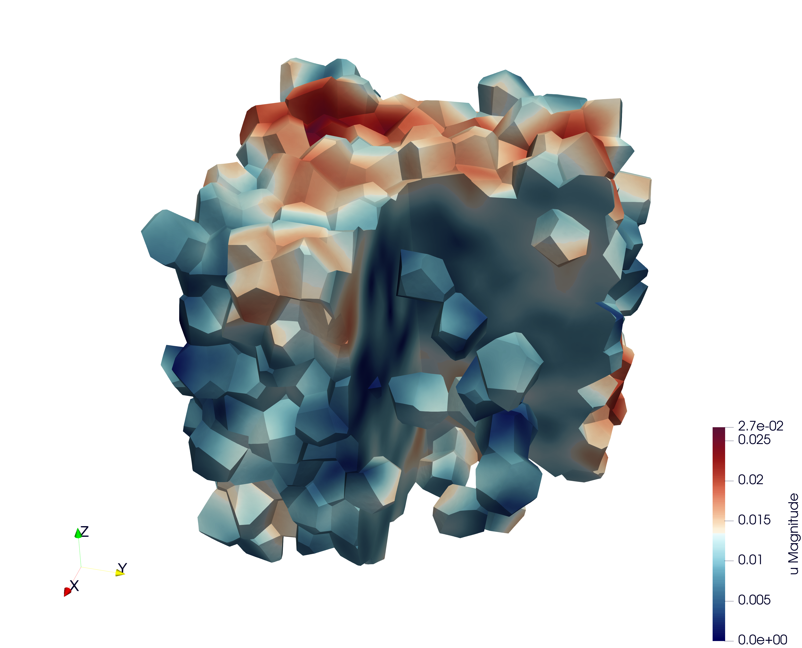
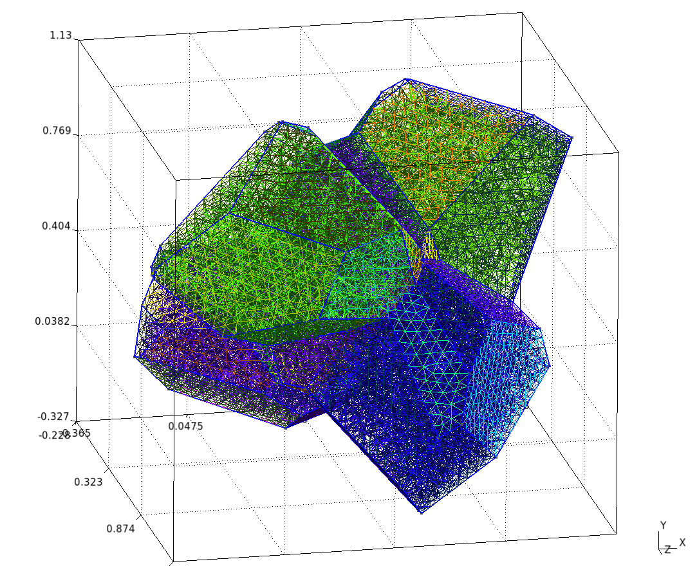
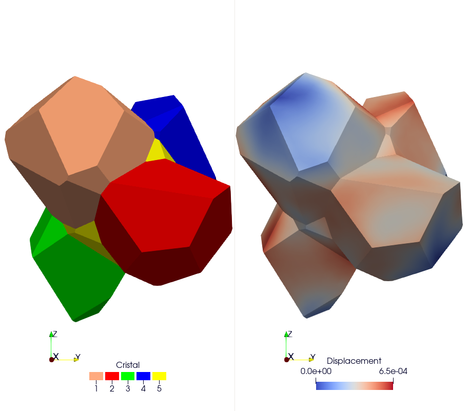
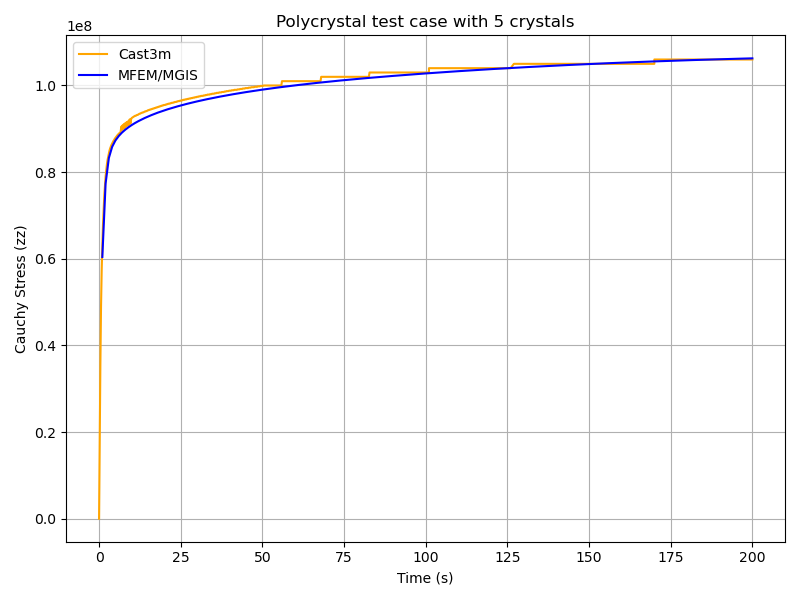

Polycrystal

Repository: https://github.com/rprat-pro/mm-opera-hpc/tree/main/polycrystal
Problem definition
This test case illustrates the simulation of a Representative Volume Element (RVE) of a polycrystal made of uranium dioxide (UO₂). The objective is to study the mechanical response of the material under uniaxial loading. This example also implements a fixed-point algorithm that enables the simulation of a uniaxial compression/tensile test with periodic boundary conditions.
Boundary conditions
Periodic boundary conditions are applied on the RVE faces.
The loading is imposed in one direction (axial component \(F_{zz}\) of the macroscopic deformation gradient). The off-diagonal components of the macroscopic deformation gradient are set to zero.
The macroscopic unknowns \(F_{xx}\) and \(F_{zz}\) are determined via a fixed-point algorithm imposing \(S_{xx}=S_{yy}=0\) (macroscopic components of the Cauchy stress tensor).
The main verification result is the stress-strain curve: \(S_{zz}\) (Cauchy) versus \(F_{xx}\).
Numerical and physical parameters
Finite element order: 1 (linear interpolation)
Finite element space: \(H^1\)
Simulation duration: 200 s
Number of time steps: 600
Constitutive law (crystal)
The UO₂ crystal plasticity law used in this example is described in reference [2], and the corresponding MFront file is available on the MMM GitHub repository. In the case of uranium dioxide, the crystal symmetry is cubic, and the corresponding orthotropic elastic properties used in the crystal plasticity law are:
Young’s modulus = 222.e9 Pa
Poisson’s ratio = 0.27
Shear modulus = 54.e9 Pa
The orthotropic basis of each grain is provided as input material data, precomputed from the grain Euler angles. The fixed-point algorithm uses the homogenized elastic properties of the polycrystal to predict the displacement gradient required to converge toward a uniaxial tensile test. These macroscopic properties are derived from the single-crystal elastic constants given above, taking the mean values of the Voigt and Reuss bounds for an isotropic polycrystal (see MacroscropicElasticMaterialProperties.cxx in the repository).
Mesh generation
This section explains how to generate a sample mesh using the Merope toolkit [1].
Before running the script, ensure that the environment variable MEROPE_DIR is properly loaded:
source ${MEROPE_DIR}/Env_Merope.sh
Then, generate the mesh in two steps:
source ${MEROPE_DIR}/Env_Merope.sh
python3 mesh/5crystals.py # generates 5crystals.geo
gmsh -3 5crystals.geo # generates 5crystals.msh
You will obtain a 3D mesh (5crystals.msh) of a polycrystalline sample composed of 5 grains.
Mesh generation options
The following parameters are set in the mesh/5crystals.py script:
L = [1, 1, 1] # Dimensions of the RVE box
nbSpheres = 5 # Number of grains (polycrystal composed of 5 crystals)
distMin = 0.4 # Minimum distance between sphere centers
randomSeed = 0 # Random seed for reproducibility
MeshOrder = 1 # Polynomial order of elements
MeshSize = 0.05 # Target mesh size
The resulting polycrystal is composed of 5 grains.
Mesh Polycrystal composed of 5 crystals

Simulation options
The main executable for this test case is uniaxial-polycrystal. Its command-line options are:
./uniaxial-polycrystal --help
Main options
Option |
Type |
Default |
Description |
|---|---|---|---|
|
— |
— |
Print the help message and exit. |
|
string |
|
Mesh file to use. |
|
string |
|
Vector file to use. |
|
string |
|
Material library. |
|
string |
|
Mechanical behaviour. |
|
int |
|
Finite element order (polynomial degree). |
|
int |
|
Mesh refinement level. |
|
int |
|
Output verbosity level. |
|
double |
|
Simulation duration. |
|
int |
|
Number of time steps. |
|
string |
|
Linear solver to use. |
|
string |
|
Preconditioner for the linear solver. Use |
|
string |
|
Output file containing the evolution of the deformation gradient and the Cauchy stress. |
|
bool |
|
Execute post-processing steps. |
|
bool |
|
Export von Mises stress. |
|
bool |
|
Export the first eigen stress. |
Note
To generate the grain orientation vectors, use the randomVectorGeneration tool provided in the distribution. This ensures a consistent and physically realistic initialization of crystallographic orientations.

Results & Post-processing
You can run the simulation in parallel using MPI:
mpirun -n 16 ./uniaxial-polycrystal
Check Results
By default, the simulation generates the file uniaxial-polycrystal.res.
Plot and Compare:
To visualize and compare the results:
python3 plot_polycrystal_results.py
This script generates the figure plot_polycrystal.png (Figure 6), showing a comparison between Cast3M and MFEM-MGIS results. The Cast3M curve shows minor oscillations due to time-step discretization. The MFEM-MGIS implicit formulation (full Newton algorithm using tangent stiffness) exhibits robust quadratic convergence and excellent parallel performance.

Check the Values
To verify simulation results:
python3 check_polycrystal_restults.py
Expected output: Check PASS.
Example detailed output:
Time MFEM/MGIS CAST3M RelDiff_% Status
0 1.0 6.041066e+07 63100000.0 4.451762 OK
1 2.0 7.737121e+07 79000000.0 2.105167 OK
2 3.0 8.327457e+07 84300000.0 1.231384 OK
3 4.0 8.583679e+07 86600000.0 0.889139 OK
4 5.0 8.730071e+07 87900000.0 0.686468 OK
.. ... ... ... ... ...
595 199.0 1.062465e+08 106000000.0 -0.231979 OK
596 199.0 1.062465e+08 106000000.0 -0.231979 OK
597 200.0 1.062661e+08 106000000.0 -0.250424 OK
598 200.0 1.062661e+08 106000000.0 -0.250424 OK
599 200.0 1.062661e+08 106000000.0 -0.250424 OK
This table shows the comparison between simulated Cauchy stress values and the reference Cast3M results, with relative differences and status indicators.